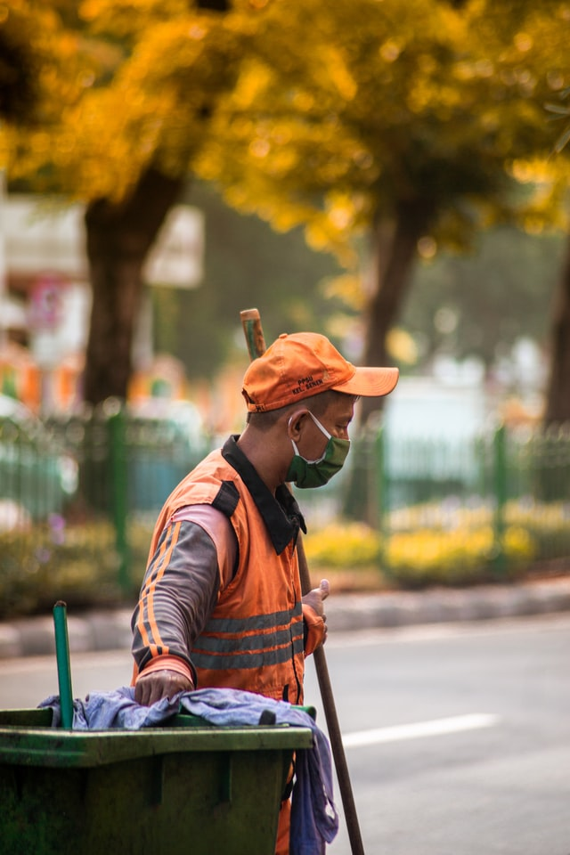

Audience
This site is designed for inhabitants of the big São Paulo city. Most of the citizens are always running to their jobs and need to check out the need of an umbrella, or a coat, or even sunglasses accessing by their mobile devices. That's why SeuTempoSP were developed mobile first thinking of a better experience to its users. You can check weather and much more news, interact with other users, everything on the palm of your hands.
Personas
Persona: IT Manager
Fictional Name:
Jane Doe
Demographics:
- 39 years old;
- Comute to work by car;
- Married, mother of 3 children;
- Her husband works at home;
- Ph.D in Digital Marketing.
Enviroment:
She is comfortable using any device. She uses her iPad at home feeling it better to carry anywhere and has a bigger screen than her phone. She spends her work time using the phone to attend virtual meetings but she uses the computer to write reports and manage worksheets.
Persona: IT Manager
Fictional Name:
Jonas Carlo
Demographics:
- 25 years old;
- Comute to work by train;
- Married, father of 2 children;
- Gradution in course (major: Communication)
Enviroment:
He is comfortable using his mobile phone most of time at home and work once it's easy to carry anywhere. He only access internet at work in the breaks he take to answer friends messages and check SeuTempoSP before coming back home.
Scenario
The following bullets list some reasons people can access the site SeuTempoSP looking for info:
- Jane is planning a picnic with family at the park for the weekend;
- Jonas is going to clean another part of the city after lunch;
- Jane's husband needs to use their car to take their firstborn to an doctor appointment, and Jane will need to walk and use public transport;
- Jonas and his wife are planning a trip to the beach at weekend, they want to know if their destination will be sunny;
- There's a flood warning to an specific region in the city, the community page allows people to communicate and make preparations to help each other.